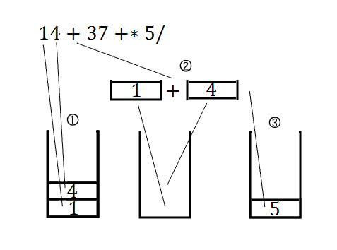

逆ポーランド記法とテンパズル
・逆ポーランド記法
四則演算を計算することを考えます。
通常私達が数式として認識しているものは例えば以下のものがあります。

答えが10なことはすぐ分かります。（簡単な算数でバカにしているつもりはありません）
意識していませんがこの私達が通常目にしている数式記法を中置記法と呼びます。
四則演算の演算子[+,-,*,/]が演算対象(オペランド)の真ん中に配置されています。
今回はこの数式をプログラムで計算させることについて調べていきます。
「計算させると言っても上の式をプログラム中に打てば計算してくれるじゃん」とお思いでしょうが、
例えば「任意の計算式を受け取り、その結果を返す」といった電卓プログラムを作ることを考えてみてください。
C++では『計算式』を表す型はありません。任意の計算式を受け取る場合もコマンドライン引数などで文字列として受け取るでしょう。
この計算式を表す文字列を解析して適切な数値計算をして結果を返す。こうした流れになります。
ちょっとした字句解析というかコンパイラちっくなことをしようとしていることでその難しさが分かるでしょうか。
さて、文字列として上の計算式str="(1+4)*(3+7)/5"を受け取ったとき、まず始めの文字から見ていくと、開きカッコ'('があります。
この開きカッコがどこで閉じられるか分からないのでとりあえずここに開きカッコがあったことだけ記憶しておきます。
次の文字を見ると数字の'1'です。これは数字ですので次に演算子が来れば計算できそうです。
而して次が'+','4'と続きますのでこれで1+4の計算ができると思いますがそうとは限りません。
もし'4'のあとに乗算*,除算/が続いていたらそちらが優先されますし、最初の開きカッコはどこに行ったのでしょう。
今のは一例で、通常記法のまま解析しようとすると問題点が多いです。
- 演算子の優先順位については全体を眺めないと分からない（字句解析は逐次的にも関わらず）
- カッコの対応も同様
- 正しい計算式が入力されるとは限らない
これらの問題点を解決するためにいろいろと制限を加える必要がありそうです。
ここでやっと表題の逆ポーランド記法が登場します。長かった・・・
一番始めの計算式が表している内容を言葉で書くと
『（1と4を足したもの）と（3と7を足したもの）を乗算してその結果を5で割ったもの』
と書けます。
ここから数字と足す・乗算・割るなどのみに着目して左から順に拾っていくと、

という記号列ができます。これを逆ポーランド記法（Reverse Polish Notation：RPN）と呼びます。
私達が通常目にしている中置記法に対してこちらは後置記法とも呼ばれ、演算子がオペランドの後方に置かれています。
見慣れない記法ですが計算式を言葉に直し、そのまま表記すれば良いので
慣れれば思考をそのまま表記できる逆ポーランド記法の方が良い、とする愛好家達は多いです。
さて、お気づきでしょうか。逆ポーランド記法に直したところカッコが消えました。
さらに演算子の優先順位も何も左から順に適用していけばよくなりました。
あら、問題点の３つのうち２つがもう解決しました。
３番目の問題についてはもう仕様としたいところですがそれでもいくつか条件はあります。
まず、前提として使用する記号は数字={'0','1','2','3','4','5','6','7','8','9'}と演算子={'+','-','*','/'}のみとします。
四則演算以外、及び10以上の数値を表す数字は計算式中に現れないものとします。
以上を踏まえて逆ポーランド記法として正しい計算式を表す記号列の条件として、
- 演算子が現れた時には少なくとも２つ以上の数字が既に現れている
- 記号列のどの地点においても数字の方が演算子より多い
- 最終的には 数字の個数=演算子の個数+1 が成り立つ
などが挙げられます。詳しくは後ろに載せるコードを実装する時にまた触れます。
・逆ポーランド記法を計算する
仮定として正しい逆ポーランド記法で記述された文字列が渡されたとしましょう。
逆ポーランド記法はスタック構造と相性が良く、数字か演算子かを判定しながらスタックに積んでいけば簡単に計算できます。
スタック構造についてはググっていただくとして、とりあえずLIFO(Last In,First Out)な構造だとだけ述べておきます。

まず記号列を左から逐次的に読み込んでいき、数字ならばスタックにそのまま積みます。
例の式だと'1','4'は数字なのでそのままスタックに積まれます。（①）
演算子が来たとき、条件よりスタックには必ず２つ以上数字が積まれています。
よってスタックから２つ取り出して演算子に対応する演算を行い（②）、結果を再度スタックに積みます。（③）
以上の操作を記号列の最後まで繰り返します。
②でスタックから２つ取り出せなかった場合はエラー（スタックアンダーフロー）、
また最後にスタックに計算結果の要素が１つ残らなければエラーです。
・仮想分数
計算結果ですがintとは限りません。
除算'/'を含むためこの系はintで閉じていません。
浮動小数点型を使ってもよいですがなるべく処理途中では小数のことは考えたくありません。
よって小数の代わりに分数で扱い、その分子と分母をそれぞれintとして実装します。
プログラムで分数を扱うための仮想分数クラスの例を以下に示します。
//CSudoDiv.h
//仮想分数
class SudoDiv{
private:
int num;//分子
int den;//分母
public:
//コンストラクタ
SudoDiv(){
setMember(0,0);
}
SudoDiv(int numerator,int denominator){
setMember(numerator,denominator);
}
//デストラクタ
virtual ~SudoDiv(){}
//メンバ設定用関数
void setMember(int numerator,int denominator){
num=numerator;
den=denominator;
}
public:
//メンバ設定用「()」
void operator()(int numerator,int denominator){
setMember(numerator,denominator);
}
//四則演算
//「+」
SudoDiv operator+(const SudoDiv& sd){
SudoDiv t;
t.num=num*sd.den+sd.num*den;
t.den=den*sd.den;
return t;
};
//「-」
SudoDiv operator-(const SudoDiv& sd){
SudoDiv t;
t.num=num*sd.den-sd.num*den;
t.den=den*sd.den;
return t;
};
//「*」
SudoDiv operator*(const SudoDiv& sd){
SudoDiv t;
t.num=num*sd.num;
t.den=den*sd.den;
return t;
};
//「/」
SudoDiv operator/(const SudoDiv& sd){
SudoDiv t;
t.num=num*sd.den;
t.den=den*sd.num;
return t;
};
//値の取得
double getValue(){
return num/(double)den;
}
};
分数の四則演算を定義しておくと自然に計算できます。
続いてこの仮想分数クラスを使って逆ポーランド記法を計算するプログラムを示します。
//RPN.cpp
//逆ポーランド記法を解く
double RPN(String rpnStr){
//逆ポーランド用スタック
stack<SudoDiv> byteStack;
SudoDiv t;
byte b;
//全文字チェック
for(int i=0,s=rpnStr.size();i<s;i++){
//解析対象の文字
b=rpnStr[i];
//数値ならスタックに積む
if(isdigit(b)){
uint n=b-'0';
t(n,1);
byteStack.push(t);
continue;
}
//演算子なら
//スタックアンダーフローチェック
if(byteStack.size()<2)throw "Stack underflow : error";
//スタックから２つ取り出す
SudoDiv t1,t2;
t1=byteStack.top();
byteStack.pop();
t2=byteStack.top();
byteStack.pop();
//演算して結果をスタックに積む
switch(b){
case '+':{
byteStack.push(t2+t1);
break;
}
case '-':{
byteStack.push(t2-t1);
break;
}
case '*':{
byteStack.push(t2*t1);
break;
}
case '/':{
byteStack.push(t2/t1);
break;
}
default:throw "Invalid operator : error";
}
}
//逆ポーランド記法チェック
if(byteStack.size()!=1)throw "Invalid syntax : error";
//結果取得
t=byteStack.top();
byteStack.pop();
//結果を返す
return t.getValue();
}
|
フローチャート

|
未定義の型がそこそこありますがそれっぽいもので読み替えてください。
フローチャートも載せました。
このプログラムを使えば逆ポーランド記法を受け付ける電卓が作れます。
・テンパズルを解く
テンパズルとは「４つの数字を使って四則演算を適用して10を作る」というやつです。
切符に書いてある数字や道行く車のナンバープレート、時計の時刻などででき、暇つぶしになります。
４つの数字から10が作れるかどうかはその組み合わせによります。
ここでは与えられた４つの数字から10が作れるかどうかを判定する関数を作りたいと思います。
10が作れるかどうかは人間ならば少し試行錯誤すればなんとなくできるかどうかは判別できます。
それをプログラムで判定させる場合には実際にありうる計算全てを試行錯誤して10になるかどうかを試す必要があります。
そこで前述した逆ポーランド記法電卓を使います。
まず与えられる数字は４つなのでそれらを計算するための演算子は３つです。
これら７つの記号からなる記号列の組み合わせを全通り生成して、逆ポーランド記法電卓につっこみ、計算して10になるものが一つでも存在すれば『解あり』と判定できます。
ただし逆ポーランド記法にはいくつか条件がありますので、完全な全通り生成する必要はありません。
//4つの数から全てのRPNを生成して解き、10かどうか判定する
byte madeStr[7];//生成された逆ポーランド記法文字列
bool SolveTen(const String& fourNum,int num/*=0*/,int exp/*=0*/){
//使用しているかのフラグ
static bool flag[4]={false,false,false,false};
//再帰の始めなら初期化
if(num==0 && exp==0){
memset(flag,false,sizeof(bool)*4);
memset(madeStr,0,sizeof(byte)*4);
}
//数値と演算子が決まった
const int L=7;
if(num+exp==L){
//doubleの比較用誤差
const double E=0.0000001;
//逆ポーランド記法を計算
double res;
try{
res=RPN(madeStr);
}
catch(const char* e){
cout<<e<<endl;
return false;
}
//res=10ならばtrue
return (abs(res-10)<E);
}
//演算子を入れることができるならば
if(num-exp>=2){
//全ての演算子を試す
bool f;
madeStr[num+exp]='+';
f=SolveTen(fourNum,num,exp+1);
if(f)return f;
madeStr[num+exp]='-';
f=SolveTen(fourNum,num,exp+1);
if(f)return f;
madeStr[num+exp]='*';
f=SolveTen(fourNum,num,exp+1);
if(f)return f;
madeStr[num+exp]='/';
f=SolveTen(fourNum,num,exp+1);
if(f)return f;
}
//数値は最大4つまで
if(num<4){
for(int i=0;i<4;i++){
if(!flag[i]){
flag[i]=true;
madeStr[num+exp]=fourNum[i];
bool f=SolveTen(fourNum,num+1,exp);
if(f)return f;
flag[i]=false;
}
}
}
return false;
}
この関数に例えばfourNum="1347"を渡すと、"13+4+7+"から始まり"7431///"までの実に7680通りの
文法的に正しい逆ポーランド記法の全てを生成します。（実際には"1347-*-"で初めて10になるので410回目の再帰で抜けます。）
生成手順により正しい逆ポーランド記法が生成されることは保証されていますが一応計算するときにtry~catchで例外を潰しておきます。
この関数がtrueを返した時、引数で渡した４つの数字からは少なくとも1通り10が作れるパターンが存在し、
その時の逆ポーランド式はグローバルなmadeStrに保持されています。
この関数がfalseの時、引数で渡した４つの数字からは10は作れない、ということが判別できます。
ここでは1通りでも10が作れるパターンが求まれば良い、としています。
もし複数通り回答パターンが存在していても１つだけしか求めません。
いろいろ数字をつっこんでみてください。意外な回答を出力するかもしれません。
・全てのテンパズルを解く
前の節で作ったSolveTenを用いて0000～9999までの全ての組み合わせに対してテンパズルが解けるかどうかを列挙してみましょう。
単純にforの4重ループで数字列を作ると生成されるのは順列です。
しかしSolveTenは組み合わせで全通り生成するので順列を渡すと無駄が多いです。
（例："1347"と"3417"は組み合わせ的に等価なものが検討されるため、どちらか一方だけ調べれば良い）
そのためここでも再帰で数字を選定していきます。
//記録用ファイルバッファ
CFile fout("./result.csv",ios::binary|ios::out);
//SloveTenを用いて全ての数字の組み合わせに対して解く
void SolveAll(int k/*=0*/,int num/*=0*/){
//現在の数値
static byte qStr[4+1]={'0','0','0','0','\0'};
//4桁数値を決めたら
if(k==4){
//Stringにして表示
String str(qStr);
cout<<str;
//4桁の数値で10が作れるならば
if(SolveTen(str,0,0)){
//逆ポーランド記法の結果を取得
extern byte madeStr[7];
String res(madeStr);
//出力
cout<<","<<res<<","<<endl;
fout<<(const char*)Format("%s,%s",(const char*)str,(const char*)res)<<endl;
}
else{
//この4桁では10は作れなかった
cout<<",×"<<endl;
fout<<(const char*)Format("%s,×",(const char*)str)<<endl;
}
return ;
}
//重複なく数値の組み合わせを決めていく(再帰)
for(int i=num;i<=9;i++){
qStr[k]='0'+i;
SolveAll(k+1,i);
}
}
コンソールに出すと共にファイルにも記録していきます。
そうして記録したcsvファイルを元にテンパズルで解が存在する組み合わせをプロットすると以下のようになります。
1で解が存在する、0で解が存在しない です。空白は既に前の段階で検討した組み合わせなのでスキップしたところです。
よって切符の数字やナンバープレートの数字４つの組み合わせをこのグラフと照らし合わせれば10が作れるかどうかがすぐ分かります（＾＾
※通常記法と逆ポーランド記法の相互変換
とりあえずテンパズルを解くという今回やりたいことは全部できました。
しかし結果で返ってくる逆ポーランド記法で記述された計算式はやはり人間の目には分かりにくい。
そこで両記法の相互変換プログラムを作ってみたいと思います。
・逆ポーランド記法から通常記法への変換
逆ポーランド記法rpnStr="14+37+*5/"から通常記法"(1+4)*(3+7)/5"への変換を考えます。
そもそもこれらの記法、同じ式を表しているので同じ構文木を持ちます。
数字を葉として、演算子を節とする木構造が作れます。
この木について赤い番号順に拾えば逆ポーランド記法、青い番号順に拾えば通常記法の文が復元できます。
よって 逆ポーランド記法->構文木->通常記法 と変換していきます。
構文木の作り方ですがこれまた再帰して作っていきます。
この構文木は２分木（演算子はオペランドを２つとる）ですので右と左のノードに対して再帰的に適用できます。
構文木を作りながら計算式を表す文字列もついでに設定していけば後から走査する必要がありません。
根の部分（上図の(/)）から木を作っていくので逆ポーランド記法で渡された文字列は逆順で処理していきます。
逆順といってもあらかじめスタックにつっこんでおいて、それから取り出していけば自然と逆順になります。（LIFO）
//逆ポーランド記法を通常記法に戻す
String RPNtoNormal(String rpnStr){
//結果用String
String res;
//構文木
class Tree{
public:
//数値ノードか(葉)
bool isNum;
//ノードの文字列
String str;
//2分木の左右
Tree *right,*left;
//コンストラクタ
Tree():isNum(false),right(NULL),left(NULL){}
//デストラクタ
virtual ~Tree(){
if(right)delete right;
if(left)delete left;
}
//スタックから木を作る
static void Make(Tree* t,stack<byte>& rev){
//スタックが空なら抜ける
if(rev.size()==0)return ;
//スタックトップを取り出す
byte c=rev.top();
rev.pop();
//数値なら
if(isdigit(c)){
//葉として設定
t->isNum=true;
t->str+=c;
t->right=t->left=NULL;
}
else{//演算子なら
t->isNum=false;
//右のノードを作成
t->right=new Tree;
Make(t->right,rev);
//左のノードを作成
t->left=new Tree;
Make(t->left,rev);
//文字列を生成<="([左][演算子][右])"
t->str+="(";
t->str+=t->left->str;
t->str+=c;
t->str+=t->right->str;
t->str+=")";
}
}
};
//逆ポーランド記法をスタックに入れる
stack<byte> rev;
for(int i=0,s=rpnStr.size();i<s;i++){
rev.push(rpnStr[i]);
}
//構文木のルートを生成しツリーを解析しながら通常記法の文字列を取得していく
Tree* root=new Tree();
Tree::Make(root,rev);
res=root->str;
delete root;
//結果を返す
return res;
}
|
フローチャート
|
再帰してるのでフローチャートはあくまでも参考として。
このプログラムにrpnStr="14+37+*5/"を渡すと"(((1+4)*(3+7))/5)"が返ってきます。
やたらカッコがついてますが通常記法に変換することができました。
・通常記法から逆ポーランド記法への変換
前述した逆ポーランド記法で記述された計算式を解くプログラムRPNの引数は当然ながら逆ポーランド記法の文字列です。
通常の計算式を計算するためには通常記法から逆ポーランド記法への変換が必要です。
通常記法から構文木を復元するのは大変ですが幸いにも再帰を使わずに逐次的に変換できるアルゴリズムがあります。
感覚としては逆ポーランド記法を説明したときの「言葉で表した時の文章から記号列を拾い上げる」感じでしょうか。
カッコや演算子についてはその対応や優先度を調べるためスタックに積みます。
数字や優先度が確定した演算子などは結果の文字列に積んでいきます。
バッファが２つあるので注意してください。
//通常記法を逆ポーランド記法に戻す
String NormaltoRPN(String normalStr){
//結果としての逆ポーランド記法文字列
String res;
byte c;
//使用可能演算子とその個数
const int ON=4;
const byte O[ON+1]={
'-','+','/','*', '\0',
};
//受け取った通常記法文字列の正当性チェック
String tmp;
//カッコの数（開きカッコなら+1,閉じカコなら-1）
int kn=0;
for(int i=0,s=normalStr.size();i<s;i++){
c=normalStr[i];
//空白(\t, \n, \rも含む)なら読み飛ばす
if(isspace(c))continue;
//等号'='なら読み飛ばす
if(c=='=')continue;
//数字なら読み込む
if(isdigit(c)){tmp+=c;continue;}
//カッコだったら読み込む
if(c=='('){tmp+=c;kn++;continue;}
if(c==')'){
tmp+=c;
kn--;
//カッコの対応がおかしい
if(kn<0)throw "Syntax error , Invalid \'(\' \')\': error";
continue;
}
//使用可能演算子なら読み込む
bool f=false;
for(int j=0;j<ON;j++){
if(c==O[j]){tmp+=c;f=true;break;}
}
if(f)continue;
//無効な文字だった
throw "Syntax error , Invalid character: error";
}
//カッコの総数がおかしい
if(kn!=0){
throw "Syntax error , Invalid \'(\' \')\': error";
}
normalStr=tmp;
//スタック
stack<byte> stack;
//文字列解析
for(int i=0,s=normalStr.size();i<s;i++){
//先頭のトークンを取得
c=normalStr[i];
//数字ならそのまま結果に積む
if(isdigit(c)){
res+=c;
continue;
}
//閉じカッコ')'なら開きカッコ'('までのスタックを結果に積む
if(c==')'){
while(!stack.empty()){
c=stack.top();
if(c=='('){
stack.pop();
break;
}
res+=c;
stack.pop();
}
continue;
}
//開きカッコ'('ならとりあえずスタックに積む
//閉じカッコ')'が来たときのマーカー
if(c=='('){
stack.push(c);
continue;
}
//演算子なら
int ci=-1,bi=-1;
//スタック上部にある演算子bと現在の演算子cの優先順位を比較する
while(!stack.empty()){
byte b=stack.top();
//演算子の優先順位を取得(インデックスが大きい程優先)
for(int i=0;i<ON;i++){
if(c==O[i])ci=i;
if(b==O[i])bi=i;
if(ci!=-1 && bi!=-1)break;
}
//スタック上部にある演算子の方が優先されるべきなら結果に積む
if(ci<bi){
stack.pop();
res+=b;
}
else{
break;
}
}
//それ以外なら(cは優先度が低い演算子だった)
stack.push(c);
}
//スタックに積んである演算子を結果に反映
while(!stack.empty()){
c=stack.top();
stack.pop();
res+=c;
}
//結果を返す
return res;
}
|
フローチャート
|
このプログラムにnormalStr="(1+4)*(3+7)/5"を渡すと"14+37+*5/"が返ってきます。
'+'と'-','*'と'/'の優先度はそれぞれ等しいものですが上のO[ ]のように優先度をつけておきます。
正当性チェックがやたら長いですがおそらくこれでも穴はあるかと思われます。
ある程度は正しい通常記法の文字列が渡される、と仕様が欲しいですね。
・まとめ
お疲れ様でした。だいぶ長くなりました。
逆ポーランド記法についていろいろやってみました。
構文解析の基礎としてスタック構造を用いた手法はよく使われます。
今回は四則演算と一桁の数字だけを対象としましたが実際にもう少し使える計算機としてはまだまだ機能が足りません。
記号とその機能を定義してその通りに振る舞うように実装すれば改良できます。
興味を持った方はぜひ挑戦してみてください。
・参考サイト
逆ポーランド記法への変換
通常記法から逆ポーランド記法への変換方法。
必ずしもこの方法しかないわけではありませんが参考にさせていただきました。
書籍
『アルゴリズムとデータ構造(プログラミングの宝箱)』
紀平拓男 春日伸弥 著
ソフトバンククリエイティブ
ISBN978-4-7973-6328-9
今回の記事を書くに至ったきっかけです。
他にも様々なアルゴリズムの基礎が書かれています。
実験的にフローチャートも載せてみたけどどうでしょ？